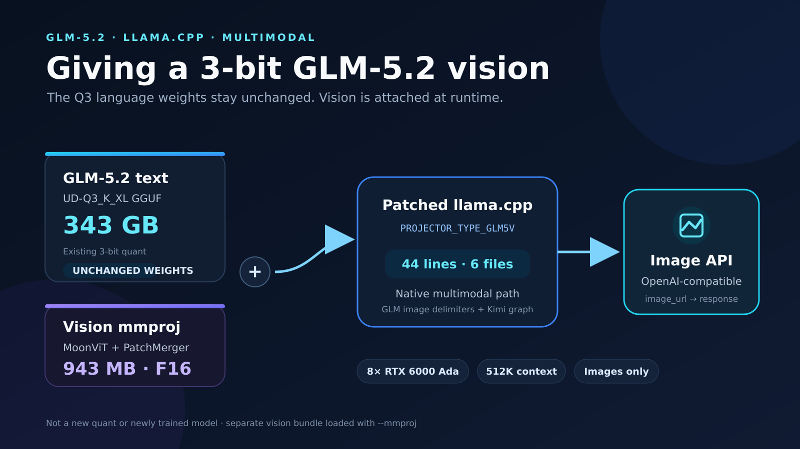
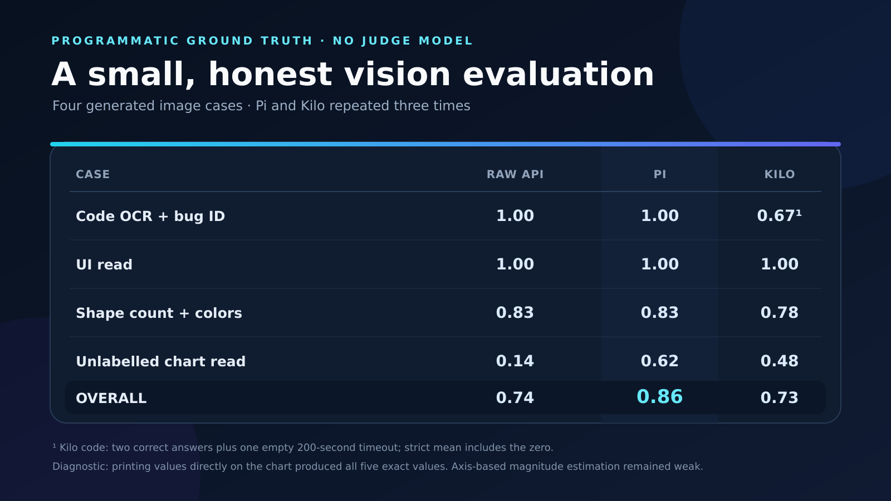
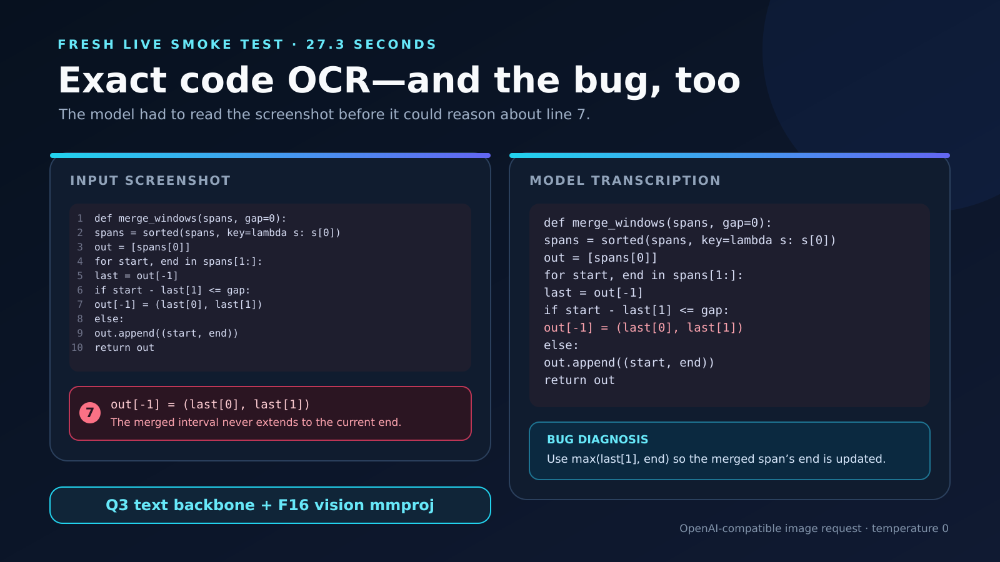

Giving a 3-bit GLM-5.2 Vision in llama.cpp
The language model did not need another conversion. I kept the existing 343 GB Q3 GGUF byte-for-byte unchanged, attached a 943 MB vision projector at runtime, and added the missing GLM multimodal path to llama.cpp in 44 lines across six files.
The starting point was a useful asymmetry. I already had Unsloth's UD-Q3_K_XL GLM-5.2 text model serving at a 524,288-token context. Baseten's vision release provided the missing visual side: a frozen MoonViT tower and its trained PatchMerger projector. The text backbone was the same GLM-5.2 family. That meant the practical question was not “can I quantize a second enormous checkpoint?” It was “can I connect this small visual front end to the text model I already run?”
The answer was yes. The result is a native OpenAI-compatible image API in llama.cpp, with the existing Q3 language weights and hardware layout preserved. This is an integration and conversion, not a newly trained model, and the vision bundle remains F16.
The Q3 server now accepts images
Vision is attached at runtime; the language weights stay unchanged.
The deployed path is deliberately simple: load the nine-part GLM-5.2 Q3 text GGUF as usual, add the separate multimodal projector with --mmproj, and let llama.cpp turn an image into embeddings before generation. The server still exposes the same OpenAI-compatible endpoint.

On the tested 8x RTX 6000 Ada box, the projector added about 1.5 GB to GPU 0 while leaving GPUs 1–6 untouched. The 512K context and one-slot serving configuration remained in place. The text model itself was not modified, duplicated, or retrained.
One graph, different delimiters
GLM shares Kimi's MoonViT graph, but not Kimi's image tokens.
The projector tensors matched llama.cpp's existing Kimi-K2.5 MoonViT implementation closely enough to reuse that graph. Most of the conversion work was naming and metadata: map Glm5vForConditionalGeneration to the Kimi vision converter, move GLM's flat projector tensor names into the layout expected by the GGUF writer, and emit a distinct glm5v projector type.
That last step is why this could not stay a Python-only conversion. llama.cpp's multimodal runtime chooses the image boundary tokens from the projector type. Kimi uses:
<|media_begin|> ... image embeddings ... <|media_end|>Those tokens are not in GLM-5.2's vocabulary. GLM needs:
<|begin_of_image|> ... image embeddings ... <|end_of_image|>So I introduced PROJECTOR_TYPE_GLM5V, routed it through the existing Kimi MoonViT graph, and gave it GLM's delimiters in mtmd.cpp. Stock llama.cpp does not yet recognize this projector type; the release includes the required patch, tested against commit ebd048fc5e4b43ec4e0b4abe0b9bf66e1724dad0.
Forty-four additive lines, six files
The small diff is possible because the hard vision graph already existed.
The patch touches the converter registry, the GLM converter subclass, GGUF projector constants, the runtime projector enum, the MoonViT graph dispatch, and multimodal image framing. It adds 44 lines across six files. The graph mathematics stays shared; the model identity and token protocol become explicit.
That distinction matters operationally. A wrapper or bridge can make an unsupported model appear multimodal, but it also creates another request path and another place for prompts, context, or routing to diverge. Here the image enters through llama.cpp's native multimodal path and the same server that owns the 512K text context.
The leverage point was compatibility, not compression. The 343 GB Q3 language model was already usable. The missing piece was a correctly typed 943 MB projector and the runtime protocol that connects its embeddings to GLM.
A small test with hard ground truth
Four generated image cases, programmatic scoring, and no judge model.
I evaluated the raw API and two agent paths on code OCR and bug identification, UI label/value reading, shape counting with colors, and an unlabelled bar chart. Pi and Kilo were run three times per case. This is an exploratory integration test, not a claim about general visual intelligence, but every score comes from programmatic ground truth rather than another model's opinion.

Code transcription and UI label/value pairing were the clear strengths. Fine-grained counting was imperfect. The sharp failure was estimating values from bar heights against an unlabelled axis: the raw API earned only 0.14. Pi improved that case enough to raise its overall mean to 0.86, while Kilo's longer scaffolding and one timeout left it at 0.73.
It read the code—and found the bug
OCR was useful because it supported reasoning, not because transcription was the endpoint.
In a fresh live smoke test, the model received only a screenshot of a short Python function. It transcribed the code exactly and identified the planted error on line 7: the merge path writes the previous end back unchanged instead of extending it to the current interval's end. The correction is to use max(last[1], end).

The correction is part of the result
A permissive scorer first made the chart case look perfect. It was not.
My first chart scorer searched the whole response for any nearby number. It credited genuinely wrong answers and produced an early “all four cases perfect” result. I replaced it with stricter field-level checks and reran the suite. The raw chart score fell to 0.14. Publishing that correction is more important than preserving the better-looking number.
A diagnostic separated two visual skills that the original case mixed together. When the exact values were printed on the bars, the model returned all five values correctly. When it had to infer magnitude from height and gridlines, it remained weak. OCR and label-to-bar binding worked; axis-based estimation did not.
I also cannot attribute that weakness to the Q3 language backbone. Baseten's official reference uses NVFP4 and requires Blackwell GPUs, and no controlled BF16-versus-Q3 or NVFP4-versus-Q3 vision comparison was performed. Axis estimation is a common VLM difficulty, so a quantization-damage claim would outrun the evidence. The current integration supports images only; video is unsupported because the released checkpoint lacks the temporal position embedding required for it.
The artifact is the documentation
Projector, patch, checksums, licenses, and raw evaluation files ship together.
The public release contains the F16 multimodal projector, the llama.cpp patch, SHA256SUMS, upstream license texts and notices, all four evaluation definitions, raw API results, agent results, and the diagnostic run. It deliberately does not duplicate the GLM text weights.
git clone https://github.com/ggml-org/llama.cpp
cd llama.cpp
git checkout ebd048fc5e4b43ec4e0b4abe0b9bf66e1724dad0
git apply /path/to/glm5v-mmproj-vision.patch
cmake -B build-cuda -DGGML_CUDA=ON -DCMAKE_BUILD_TYPE=Release
cmake --build build-cuda --target llama-server -j
./build-cuda/bin/llama-server \
--model /path/to/GLM-5.2-UD-Q3_K_XL-00001-of-00009.gguf \
--mmproj /path/to/mmproj-GLM-5.2-Vision-f16.gguf \
--ctx-size 524288 --parallel 1 --port 8006huggingface.co/ibrahima2222/GLM-5.2-Vision-mmproj-GGUF ↗
The release is an unofficial conversion and integration, not a new checkpoint. Its metadata uses license: other because the bundle mixes Baseten's MIT projector terms, Kimi-K2.6's Modified MIT terms for the MoonViT tower, and llama.cpp's MIT terms. The repository includes the exact notices and the projector's verified SHA-256.
What I carry forward. Small compatibility patches can unlock large deployed models when their components already line up. But the integration is only credible when the artifact is reproducible, the limitations are specific, and a bad measurement is corrected in public.